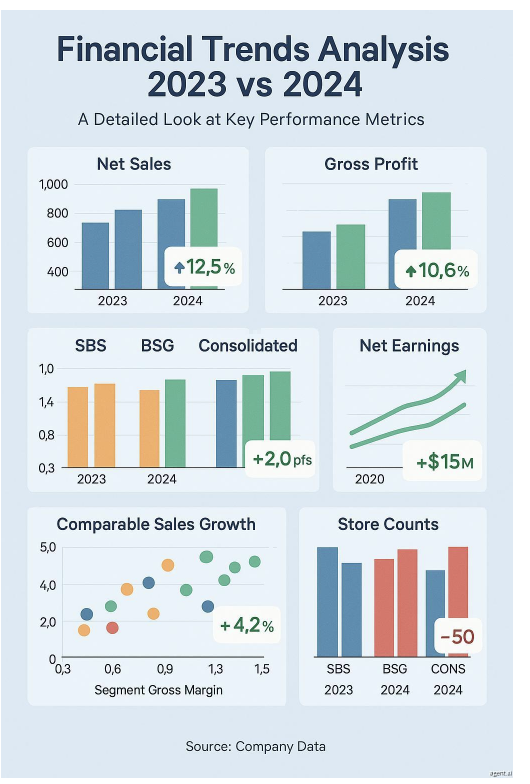
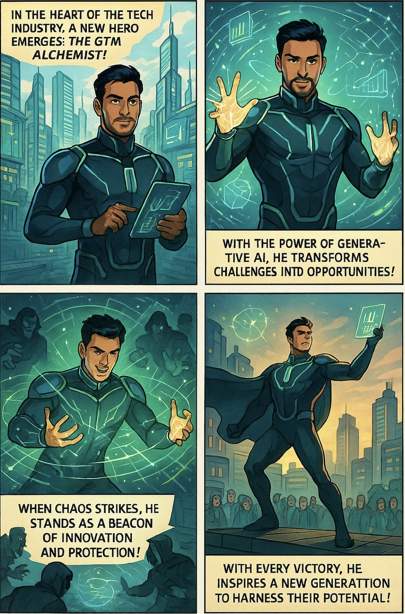

Generating Images with an agent

Even since OpenAI released their new image generation functionality, on March 25th to be precise, I have been waiting with bated breath for it to be available via the API so I can use it in my favorite agent builder tools to build agents that visualize information.
I have documented all my struggles with using GenAI to generate text and images and it is impressive to see how far we've come. Well that day arrived yesterday and agent.ai was quick to make it available in their platform and I have been trying out some of the use cases that I have put on pause.
One caveat is that this does make the agent slow. As OpenAI had pointed out, all the image generation was "melting their servers" and now that there is API access, I am sure a lot of people are generating images using agents, which slows things down even more.
2. Generating an infographic : I have always wanted to do this. I am not a visual person and I have no skill in generating good infographics from data and I want to build an agent that takes a CSV file, analyzes it and then generates an infographic. The results here are a bit of a hit or miss. I gave the agent financial data from the P&L of a retail firm and asked it to analyze it and then generate an infographic.

On the surface, this is pretty impressive. It generated bar charts / scatter plots / line graphs etc. The visuals also accurately represent the data, but when you dig deeper you can see that while this demos well, it is not really that useful.
When you look at Net Sales - it is hard to figure out what the exact numbers are. Why is there 1 green bar? What does the 12.5% represent?
I won't go through each chart to point out the gaps, but what is obvious to me is that generating infographics (at least number heavy ones are a tricky use case).
3. Generating a Superhero Comic Strip : A few months ago I had done a series around using people's LinkedIn information to generate a superhero bio for each person. The one thing I had struggled with was generating a superhero image. So I wanted to test and see if I could generate a comic strip for each person using their generate bio. This it did a great job with.

If anyone wants to try out the Comic Strip agent, here is the link.
I am excited to see what else is possible and keep iterating and seeing what kind of infographics I can build, but it is extremely impressive how far we have come in a year.